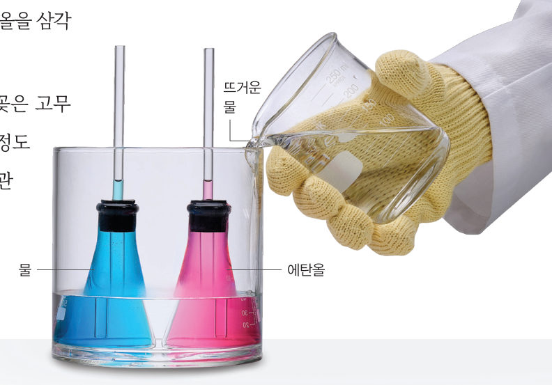
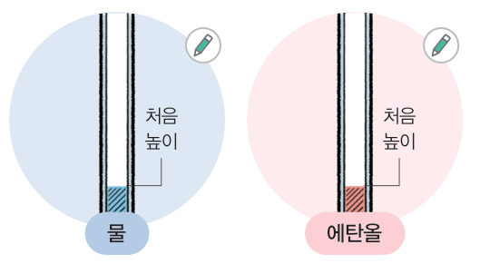
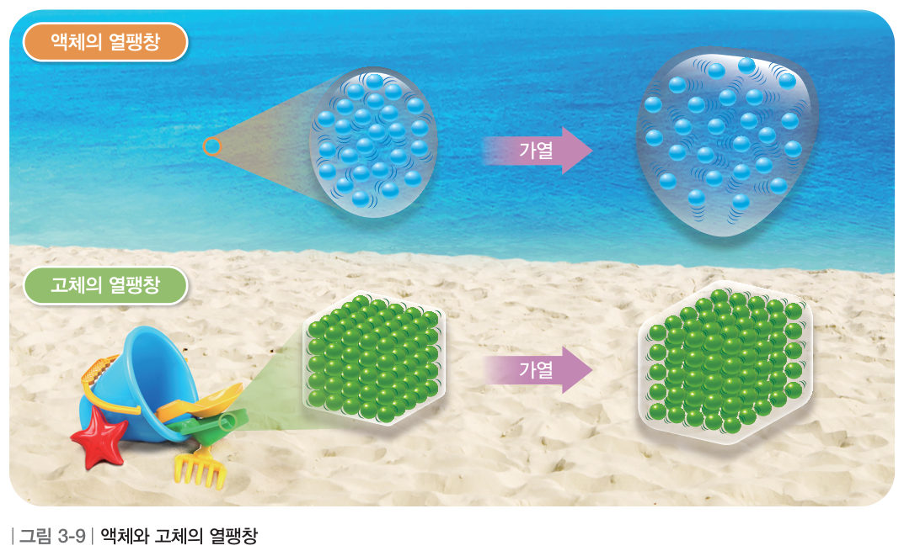
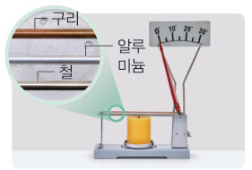
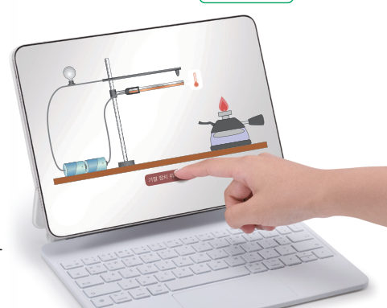
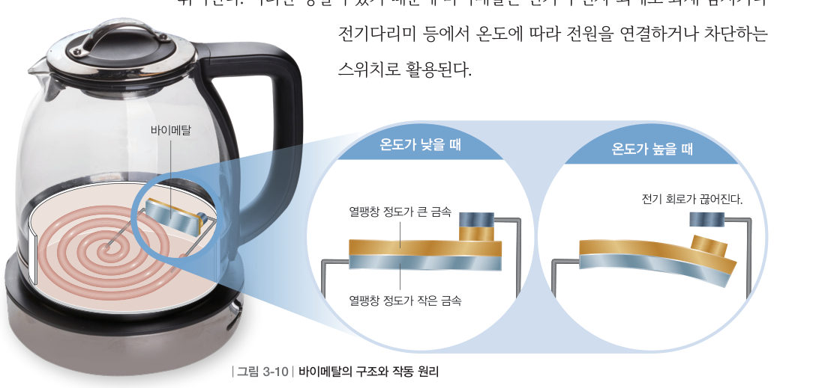
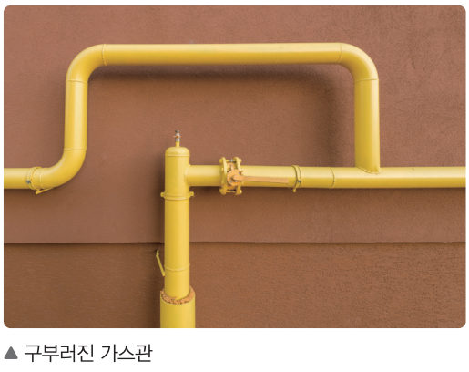
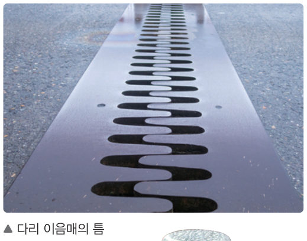
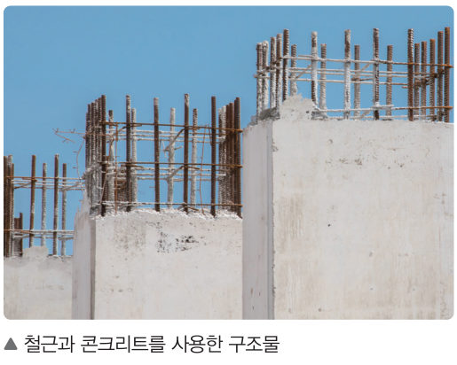
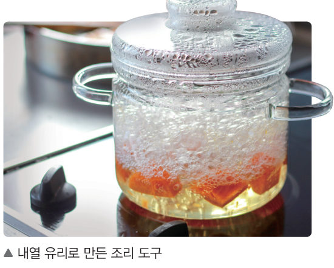

“이 틈은 뭐지?” 기차선로 곳곳에는 약간의 틈이 벌어져 있다. 이 틈은 더운 여름에 기차선로가 열을 받으면 부피가 변하는 것과 관계가 있다. 가상 실험으로 액체와 금속의 열팽창을 비교하고, 3D 바이메탈 스위치를 직접 작동시켜 보자.
🎯 이 단원을 배우면 — 물질에 따라 열팽창 정도가 다름을 설명하고, 일상생활에서 열팽창이 유용하게 활용됨을 알 수 있다.
탐구여러 가지 액체의 부피 변화 확인하기 100~101쪽
온도가 높아지면 물질의 부피는 어떻게 변할까?

100쪽물과 에탄올을 채운 삼각 플라스크를 수조에 넣고 뜨거운 물을 붓는다.

101쪽어느 쪽의 높이가 더 많이 변하는가?
어떻게 할까
서로 다른 색의 물감을 섞은 물과 에탄올을 삼각 플라스크에 각각 가득 채운다.
삼각 플라스크의 입구를 유리관을 꽂은 고무마개로 막고, 액체가 유리관에 어느 정도 올라올 때까지 잠시 기다렸다가 유리관에 액체의 높이를 표시한다.
삼각 플라스크를 수조에 넣고 뜨거운 물을 천천히 붓는다.
관찰 유리관에 올라온 액체의 높이 변화를 관찰하여 그림에 표시한다.
⚠️ 뜨거운 물을 사용할 때 화상을 입지 않도록 주의한다. 실험을 마치면 실험에 사용한 에탄올은 지정된 곳에 모아 처리한다.
가상 실험가상 수조와 유리관
수조에 부을 물의 온도를 정하고 [뜨거운 물 붓기]를 누르면 플라스크 속 액체의 온도가 서서히 올라가요. 유리관의 점선이 처음 높이예요. 오른쪽 입자 확대 창으로 입자 사이의 거리도 비교해 보자.
액체 온도20.0 ℃
🔵 물 높이 변화0.0 cm
🔴 에탄올 높이 변화0.0 cm
정리해 볼까
1모형 이용 액체의 온도가 높아질 때 부피가 변하는 까닭을 입자의 움직임으로 설명해 보자.
2결론 도출 유리관 속 높이가 더 많이 변한 액체는 이므로, 물질마다 열팽창하는 정도가 .
교과서열팽창 101쪽
삼각 플라스크가 담긴 수조에 뜨거운 물을 부으면 유리관 속 액체의 수면이 높아진다. 이는 그림 3-9와 같이 액체의 온도가 높아질 때 액체를 구성하는 입자의 움직임이 활발해지고, 입자 사이의 거리가 멀어지며 부피가 늘어나기 때문이다. 이와 같이 물질의 온도가 높아질 때 부피가 늘어나는 현상을 열팽창이라고 한다. 물질마다 열팽창하는 정도가 다르며, 고체도 액체와 마찬가지로 열팽창한다.

그림 3-9액체와 고체의 열팽창
다르게 해 보기금속 막대의 열팽창 비교하기 101쪽

① 그림과 같이 구리, 알루미늄, 철 막대를 장치한다. ② 막대를 가열하며 바늘의 눈금을 관찰한다. 👉 아래 가상 장치에서 [가열]을 누르면 세 막대가 똑같이 데워지고, 막대 끝이 바늘을 밀어 돌려요. (실제로 늘어난 길이는 아주 작아서 바늘로 크게 보여 줘요.)
1정리 금속 막대의 팽창 정도가 큰 것부터 순서대로 나열해 보자. (끌어서 옮기기)
철
알루미늄
구리
해 보기일상생활에서 열팽창을 활용하는 예 알아보기 — 바이메탈 102쪽
열팽창 정도가 다른 물질을 일상생활에 어떻게 활용할까?

102쪽바이메탈 가상 실험
우리는 일상생활에서 물질의 열팽창을 다양하게 활용하고 있다. 바이메탈은 열팽창 정도가 다른 두 금속을 붙인 것으로, 온도에 따라 전자 기기의 전원을 끄거나 켤 때 활용된다.
교과서에서는 스마트 기기로 ‘바이메탈 가상 실험’을 검색하라고 하지만, 살아있는 교과서에서는 바로 아래에서 실험할 수 있어요!
3D 가상 실험바이메탈 스위치(전기 주전자)
두 금속을 고르고 온도를 바꿔 보자. 바이메탈이 휘어지면 접점에서 떨어져 전기 회로가 끊어지고 전구가 꺼져요. 0 ℃ 아래로 냉각하면 어느 쪽으로 휠까? 드래그로 돌려 볼 수 있어요.
바이메탈 3D
회로연결됨
휘어진 방향-
온도를 높여 보세요.

그림 3-10바이메탈의 구조와 작동 원리
바이메탈은 그림 3-10과 같이 온도가 높아지면 열팽창 정도가 작은 금속 쪽으로 휘어진다. 이러한 성질이 있기 때문에 바이메탈은 전기 주전자 외에도 화재 감지기나 전기다리미 등에서 온도에 따라 전원을 연결하거나 차단하는 스위치로 활용된다.
1바이메탈을 가열하면 열팽창 정도가 ( ) 금속 쪽으로 휘어진다.
2🧑🤝🧑 바이메탈을 활용할 수 있는 기구나 장치는 어떤 것들이 있을지 토의해 보자.
교과서열팽창을 고려한 예 103쪽
이 밖에도 그림 3-11과 같이 열팽창을 고려한 예를 우리 주변에서 쉽게 볼 수 있다. 가스관에 구부러진 부분을 만들고, 다리나 기차선로 중간에 틈을 만드는 것은 여름철에 온도가 높아져 물질이 팽창하는 것을 고려한 것이다. 콘크리트 구조물에는 열팽창 정도가 비슷한 철근과 콘크리트를 사용해 건물에 균열이 생기는 것을 막는다. 또 투명한 조리 도구나 실험 기구에는 열에 변형되어 깨지지 않도록 열팽창 정도가 작은 내열 유리를 사용하기도 한다. 이와 같이 시설물이나 도구를 만들 때 물질의 열팽창 정도를 고려하면 안전하고 편리하게 생활할 수 있다.

그림 3-11구부러진 가스관

다리 이음매의 틈

철근과 콘크리트를 사용한 구조물

내열 유리로 만든 조리 도구
가상 실험기차선로에 틈이 있는 까닭은 무엇일까?
계절(선로 온도)을 바꾸고 틈의 크기를 정해 보자. 틈이 너무 좁으면 한여름에 선로가 늘어날 곳이 없어 휘어져요! (선로 한 칸 25 m, 철의 열팽창 정도 약 12 ×0.000001/℃)
선로 한 칸이 늘어난 길이-
남은 틈-
상태-
1한여름 선로 온도가 60 ℃까지 올라가도 휘지 않으려면 15 ℃에서 설치할 때 틈을 적어도 약 mm로 만들어야 한다.
2콘크리트 구조물에는 열팽창 정도가 ( ) 철근과 콘크리트를 사용하고, 투명한 조리 도구에는 열팽창 정도가 ( ) 내열 유리를 사용한다.
스스로 확인하기100쪽 학습 목표를 달성했는지 확인해 보자 103쪽
1개념 확인 물질의 온도가 높아질 때 부피가 늘어나는 현상을 ( )(이)라고 한다.
2사고력 구리의 열팽창 정도는 철보다 크다. 구리와 철로 만든 바이메탈을 냉각하면 바이메탈은 쪽으로 휘어진다. 그 까닭을 설명해 보자.
5분 테스트열팽창과 우리 생활
1열팽창은 열에 의해 입자의 움직임이 해지면서 입자 사이의 거리가 멀어지기 때문에 나타난다.
2고체의 열팽창과 관련된 현상이면 O, 아니면 X를 골라 보자.
③ 다리나 철로 이음새 부분에 틈을 만든다.
④ 불 위에 둔 냄비가 점점 전체적으로 뜨거워진다.
⑤ 전깃줄이 여름철에는 늘어지고, 겨울철에는 팽팽해진다.
⑥ 냉장고 안에 과일을 넣은 후 시간이 지나면 과일이 차가워진다.
⑦ 유리병의 금속 뚜껑에 뜨거운 물을 부으면 뚜껑이 쉽게 열린다.
3같은 물질이면 고체, 액체, 기체 상태에 관계없이 열팽창 정도가 ( ).
4금속 고리보다 약간 커서 고리를 통과하지 못하는 금속 공이 있다. 금속 공이 고리를 통과하게 하려면 금속 공을 ( )시키고, 금속 고리를 ( )시키면 된다.
스스로 정리하기열팽창 · 두 번째 블록 찾기 104쪽
2열팽창
(1) : 물질의 온도가 높아질 때 부피가 늘어나는 현상 (2) 열팽창하는 까닭: 온도가 높아지면 입자 사이의 거리가 부피가 늘어나기 때문이다. (3) : 열팽창 정도가 다른 두 금속을 붙인 것으로, 온도에 따라 전자 기기의 전원을 끄거나 켤 때 활용된다. • 열팽창을 고려한 예: 구부러진 가스관, 다리 이음매의 틈, 철근과 콘크리트를 사용한 구조물, 내열 유리로 만든 조리 도구 등
🧩 두 번째 블록 찾기
조리 시간과 안전을 고려하면 캠핑용 조리 도구는 어떤 성질이 있는 재료로 만들어야 할까?
힌트 조각 2 (103쪽): 조리 도구를 만드는 재료의 열팽창 정도가 ( ) 조리할 때 조리 도구가 잘 변형되지 않는다. 힌트 조각 1 (99쪽): 비열이 작은 재료로 만든 조리 도구는 가열할 때 빠르게 뜨거워져 음식을 빠르게 조리할 수 있다.
제출학생 정보 · 제출하기
모든 활동을 마친 뒤 제출하면 전체가 한 번에 채점되고 피드백이 나타나요. 답안은 선생님 스프레드시트(중1 탭)에 기록돼요.